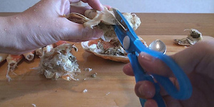

มันเป็นใบหน้าที่ถูกปลอมแปลงน้อยในแนวนอน
ปูหิมะ
แม้ว่ามันจะเป็นความยุ่งยากที่นิยมเช่นยาที่ถูกปอกเปลือกยังสำหรับ "ปูบู"
ทั้งที่เต็มไปด้วยในครั้งนี้
ส่วนใหญ่ kana การรื้อถอนได้ง่ายในปูสามหรือไม่ ฉันได้รับอนุญาตให้ออกไปจากที่สิ้นสุดและฉันคิดว่า แต่ที่จริงแล้วผมรู้สึกว่าเด็กคนนี้มีระดับที่สูงขึ้นของความยากลำบากที่จะมากที่สุด

ครั้งแรกที่ฉันถอดเท้า มัน ... ตัดออกไปและมาก

เชลล์ แต่ไม่น้อยแรกพยายามอย่างหนักอย่างไม่คาดคิด
และเมื่อคุณตัดการเชื่อมต่อเพียง แต่มีการวางกรรไกรดีกับข้อต่อกล้องจะปิดไปบิดเบา ๆ ส่วนที่เหลือ
มันคือความสนุกสวยถ้าคุณจำเคล็ดลับ
และฉันลบ "ผ้าขาวม้า"

ฉันยังเอาเปลือก สถานที่นี้เป็นปูมิโซะ
เนื่องจากบางอย่างเงียบ ๆ เพื่อที่จะไม่รั่วไหล
ผมถอดเหงือก Pirapira "ปู"
เห็นในช่วงครึ่งปีต่อไปเพื่อที่จะลดลงครึ่งหนึ่งมันจะกลายเป็นแนวตั้งเพื่อตัดขาไปโอบกอด
ตัวเองผมได้ตัดการเชื่อมต่อในทางที่ผิดด้วยการเดินเท้าทางอ้อม แต่ดูเหมือนว่าเป็นสิ่งที่ดีโดยไม่ต้องปิด .

ส่วนหนาของเท้าเป็นพักของทั้งสองด้านด้านหน้า
บางส่วนของการหยุดพักหนึ่งที่ด้านหลัง
หลังจากที่คุณได้ตี "ปู" และ "ปู" คนเดียวจริง
กำลังกลายเป็นไม่ได้หาไม่ได้
และผมปูหิมะฉันแข็ง
ฉันก็จะพ่ายแพ้เป็นครั้งแรกที่มีความแข็งแรงนี้

มันได้กลายเป็นตัดโง่ แต่เสร็จแล้ว

แต่ในท้ายที่สุดนี้ ...